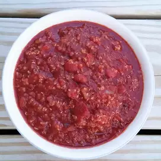

Chili Recipe

Chili with Quinoa
Put a small amount of pasta in a bowl and spoon
in chili with Quinoa
Ingredients
- 1 Large onion, chopped
- 2 Large cloves garlic, minced
- 2(28 OZ) cans tomatoes, undrained
- 1(28 Oz) can tomatoe sauce
- 1 (15 OZ) can Kindey Beans, drained and Rinsed
- 3 tablespoons chili powder
- 1 3/4 teaspoons salt, or to taste
- 1 teaspoon white sugar
- 4 cups water, divided
- 1 cup quinoa
Steps
- Saute Onion and Garlic in stockpot over medium
high heat until soften, 5 to 10 minutes.
- Add can tomatoes, tomatoe sauce, chili beans,
kidney beans, chili powder, cumin, salt and sugar
- Pour 2 cups of water and simmer until flavors blend. About 1 hour
- Bring 2 cups of water and quinoa to a boil in saucepan.
- Reduce heat to medium-low cover and simmer until quinoa
is tender and water has been absorbed. 15 to 20 minutes.